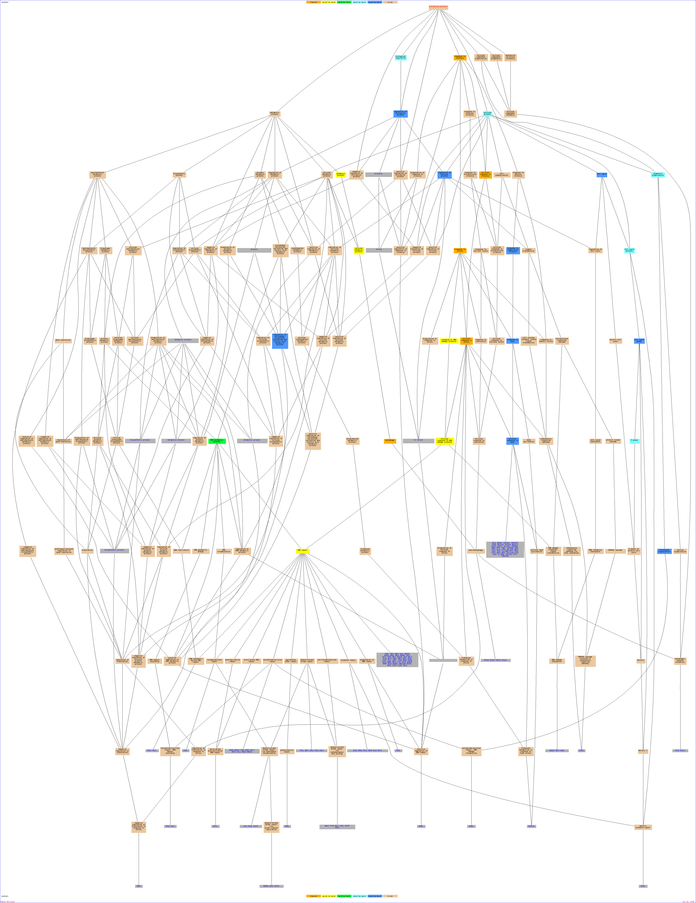

Of your input list, 649 genes are known or unknown but not ambiguous. The total number of genes used to calculate the background distribution of GO terms is 7274.Result Table| Terms from the Process Ontology of gene_association.sgd with p-value <= 0.01 | | Gene Ontology term | Cluster frequency | Genome frequency | Corrected
P-value | FDR | False
Positives | Genes annotated to the term |
|---|
| cellular response to stress | 110 of 649 genes, 16.9% | 530 of 7274 genes, 7.3% | 1.47e-15 | 0.00% | 0.00 | PHR1, TDP1, RAD4, SBP1, MLH2, MSC1, DDR48, STH1, RAD24, MPH1, DNL4, VPS15, RDH54, YOR292C, YHR087W, SMC6, SPG5, FYV6, YNL200C, HSP104, STE11, SCC4, MGS1, NCE103, ATG4, RIM20, TRF5, HSP12, RPN4, YKL151C, YOR052C, TFB3, MOH1, MEC3, RPF1, ATG17, GAD1, YJR096W, RAD28, DPB3, GPH1, STF2, PRI2, SMC5, REV3, SLX8, HEX3, POL2, ATG20, GLK1, YNG2, SWC4, PDS1, NSE1, ASP3-1, LAP4, SNF2, RFA2, CTF4, YNL274C, RCK2, UBI4, GCN2, SSL1, ASP3-2, YGP1, TPS1, IMP2', CSM3, NSE3, YLL058W, ASP3-4, MSH5, SMC1, MTF2, XRS2, RAD2, PRX1, PIR3, VPS30, BDF2, PIF1, ASP3-3, HPR1, UBX3, HBT1, YDL124W, MLH3, RAD26, RPB4, PSO2, RAD54, YBR100W, MUS81, RPH1, SSK1, CCZ1, HXT6, SSA4, YKU70, RTT101, ATG13, YLL056C, ESA1, RFC2, POL4, YPL071C, HXT7, YMR090W, SAC3 | | cellular response to stimulus | 112 of 649 genes, 17.3% | 554 of 7274 genes, 7.6% | 5.60e-15 | 0.00% | 0.00 | PHR1, TDP1, GPR1, RAD4, SBP1, MLH2, MSC1, DDR48, STH1, RAD24, MPH1, DNL4, VPS15, RDH54, YOR292C, YHR087W, SMC6, SPG5, FYV6, YNL200C, HSP104, STE11, SCC4, MGS1, NCE103, ATG4, RIM20, TRF5, HSP12, RPN4, YKL151C, YOR052C, TFB3, MOH1, MEC3, RPF1, ATG17, GAD1, YJR096W, RAD28, DPB3, GPH1, STF2, PRI2, SMC5, REV3, SLX8, HEX3, POL2, ATG20, GLK1, YNG2, ADR1, SWC4, PDS1, NSE1, ASP3-1, LAP4, SNF2, RFA2, CTF4, YNL274C, RCK2, UBI4, GCN2, SSL1, ASP3-2, YGP1, TPS1, IMP2', CSM3, NSE3, YLL058W, ASP3-4, MSH5, SMC1, MTF2, XRS2, RAD2, PRX1, PIR3, VPS30, BDF2, PIF1, ASP3-3, HPR1, UBX3, HBT1, YDL124W, MLH3, RAD26, RPB4, PSO2, RAD54, YBR100W, MUS81, RPH1, SSK1, CCZ1, HXT6, SSA4, YKU70, RTT101, ATG13, YLL056C, ESA1, RFC2, POL4, YPL071C, HXT7, YMR090W, SAC3 | | autophagy | 66 of 649 genes, 10.2% | 247 of 7274 genes, 3.4% | 5.27e-14 | 0.00% | 0.00 | GPR1, YNL224C, CCL1, CNN1, PEP3, HUL5, VPS15, HEM14, DBF20, ATG4, YLR030W, ECM5, VPS38, TFB3, RIM13, SIR1, ATG17, FIN1, YAP5, RAD28, YDR458C, YEL023C, ATG19, RDR1, MKK2, YML020W, REV3, HOS1, PEX15, ATG20, MPC54, SNT2, FAB1, SSL1, ATG11, YJL012C-A, MAD3, BPT1, HSV2, NBP1, PEX4, YDL176W, XRS2, PCL10, YDL133W, VPS30, NKP1, PIG1, SRC1, VPS41, RAD54, GSH1, CCZ1, SNU71, CIS1, DUR3, PEX28, TFC6, ATG26, RTT101, ATG13, ESA1, MAC1, FES1, POL4, GTT2 | | response to stimulus | 182 of 649 genes, 28.0% | 1155 of 7274 genes, 15.9% | 6.70e-14 | 0.00% | 0.00 | PHR1, TDP1, GPR1, RAD4, SBP1, MLH2, PHM6, RVS161, PEP3, HSP42, MPH1, MET17, RDH54, YOR292C, TAP42, FAR11, SMC6, NCA3, SPG5, STE11, NCE103, GAC1, YOR052C, MOH1, MEC3, TPS2, IES4, STF2, PRI2, YJL055W, AAD10, OCA1, RDR1, SLX8, XBP1, ATG20, GLK1, PAU7, SWC4, PDS1, NSE1, SNF2, YOR338W, RCK2, MET30, SSL1, YJL012C-A, PRR2, TPS1, CSM3, YLL058W, MSH5, CBK1, XRS2, PRX1, PGD1, PIF1, CUP2, ASP3-3, KIN82, MLH3, VPS64, RPB4, NRG1, YOL063C, MUS81, GSH1, RRI2, YRR1, PHD1, CCZ1, YDR291W, HXT6, YKU70, TFC6, RTT101, CRS5, MRK1, YPL071C, POL4, IMH1, GTT2, HXT7, YMR090W, SAC3, HSC82, HSF1, CAD1, MSC1, DDR48, STH1, SPO14, RAD24, DNL4, VPS15, YHR087W, UFO1, YKL071W, FYV6, YNL200C, HSP104, SCC4, MGS1, RIM20, ATG4, TRF5, HSP12, RPN4, YKL151C, TFB3, CBF1, YIL169C, TRR2, MET28, ATG17, RPF1, GAD1, HSP32, YJR096W, RAD28, GPH1, DPB3, ELM1, SMC5, REV3, BRE1, HEX3, POL2, CIN5, YNG2, ADR1, ASP3-1, MET4, LAP4, CTF4, RFA2, YNL274C, UBI4, GCN2, GPX1, FRT1, ASP3-2, YGP1, IMP2', JLP1, NSE3, ASP3-4, SMC1, CSN9, MTF2, PRM4, RAD2, SSQ1, OYE3, PIR3, VPS30, BDF2, FAR8, CTK2, HPR1, UBX3, AZF1, HBT1, CTK1, YDL124W, UBA4, YIL077C, RAD26, PSO2, RAD54, YBR100W, RPH1, YLR247C, ASR1, SSK1, SSA4, ATG13, YLL056C, GPA1, ESA1, MAC1, RFC2 | | response to stress | 139 of 649 genes, 21.4% | 829 of 7274 genes, 11.4% | 6.63e-12 | 0.00% | 0.00 | PHR1, TDP1, RAD4, SBP1, MLH2, RVS161, HSP42, MPH1, RDH54, YOR292C, SMC6, SPG5, STE11, NCE103, GAC1, YOR052C, MOH1, MEC3, TPS2, IES4, STF2, PRI2, OCA1, SLX8, XBP1, ATG20, GLK1, PAU7, SWC4, PDS1, NSE1, SNF2, YOR338W, RCK2, SSL1, TPS1, CSM3, YLL058W, MSH5, XRS2, PRX1, PIF1, ASP3-3, MLH3, RPB4, YOL063C, MUS81, GSH1, PHD1, CCZ1, YDR291W, HXT6, YKU70, RTT101, MRK1, YPL071C, POL4, IMH1, HXT7, YMR090W, SAC3, HSC82, HSF1, MSC1, DDR48, STH1, RAD24, DNL4, VPS15, YHR087W, UFO1, FYV6, YNL200C, HSP104, MGS1, SCC4, RIM20, ATG4, TRF5, HSP12, RPN4, YKL151C, TFB3, TRR2, ATG17, RPF1, HSP32, GAD1, YJR096W, RAD28, GPH1, DPB3, ELM1, SMC5, REV3, HEX3, POL2, CIN5, YNG2, ASP3-1, LAP4, CTF4, RFA2, YNL274C, UBI4, GCN2, GPX1, FRT1, ASP3-2, YGP1, IMP2', NSE3, ASP3-4, SMC1, MTF2, SSQ1, RAD2, PIR3, VPS30, CTK2, BDF2, UBX3, HPR1, HBT1, CTK1, YDL124W, UBA4, RAD26, PSO2, YBR100W, RAD54, YLR247C, RPH1, SSK1, SSA4, ATG13, ESA1, YLL056C, RFC2 | | cellular catabolic process | 144 of 649 genes, 22.2% | 901 of 7274 genes, 12.4% | 1.14e-10 | 0.00% | 0.00 | GPR1, YNL224C, SBP1, PEP3, UBX7, GPM2, PIM1, DDP1, DBF20, UBC6, YLR030W, YPR115W, VPS38, FIN1, FMO1, YAP5, YBR108W, ATG19, NPL4, RDR1, MKK2, DDI1, RPT2, SLX8, HOS1, ATG20, VPS28, ERR2, YDR306C, GLK1, YER034W, CHA4, SNT2, ASG7, YHR202W, FAB1, MET30, ARO80, MUP3, SSL1, ATG11, YJL012C-A, HSV2, RRP46, YDL176W, PEX4, PCL10, XRS2, NKP1, ASP3-3, SRC1, YDR219C, POX1, VPS41, RPB4, GSH1, GND2, CCZ1, DUR3, TFC6, RTT101, GDB1, YLR446W, POL4, RNY1, YPL110C, GTT2, PGM2, CCL1, PRC1, CNN1, SPS19, HUL5, VPS15, HEM14, UFO1, VPS20, YPL277C, ATG4, ECM5, GSC2, TRF5, HRT3, TFB3, RIM13, SIR1, YIL169C, SPO1, ATG17, GAD1, YJR096W, RAD28, GPH1, ERR3, YDR458C, RPT1, YEL023C, YTA7, UFD4, YML020W, REV3, BRE1, PRY1, HEX3, PEX15, MPC54, NMD2, NOT5, PLC1, GID8, ASP3-1, LAP4, YNL274C, KEM1, ASP3-2, MAD3, BPT1, JLP1, PFK26, ASP3-4, NBP1, YDL133W, RAD2, VPS30, UBP2, UBX5, UBX3, PIG1, SHP1, UBA4, DUR1,2, RAD54, SNU71, CIS1, ATG26, PEX28, ATG13, ESA1, MAC1, ULP1, FES1, YOR138C, PAI3, UBP15 | | cellular response to DNA damage stimulus | 59 of 649 genes, 9.1% | 256 of 7274 genes, 3.5% | 2.97e-09 | 0.00% | 0.00 | PHR1, TDP1, SWC4, PDS1, RAD4, NSE1, MLH2, SNF2, DDR48, CTF4, RFA2, GCN2, STH1, SSL1, RAD24, MPH1, DNL4, IMP2', RDH54, CSM3, NSE3, MSH5, SMC6, SMC1, FYV6, XRS2, RAD2, SCC4, MGS1, TRF5, RPN4, BDF2, PIF1, HPR1, TFB3, MLH3, MEC3, RAD26, RPB4, RAD28, PSO2, RAD54, YBR100W, DPB3, MUS81, RPH1, PRI2, SMC5, REV3, YKU70, RTT101, SLX8, HEX3, POL2, ESA1, RFC2, POL4, YNG2, SAC3 | | DNA repair | 57 of 649 genes, 8.8% | 244 of 7274 genes, 3.4% | 3.94e-09 | 0.00% | 0.00 | PHR1, TDP1, SWC4, PDS1, RAD4, NSE1, MLH2, SNF2, DDR48, CTF4, RFA2, STH1, SSL1, RAD24, MPH1, DNL4, IMP2', RDH54, CSM3, NSE3, MSH5, SMC6, SMC1, FYV6, XRS2, RAD2, SCC4, MGS1, TRF5, RPN4, BDF2, PIF1, HPR1, TFB3, MLH3, MEC3, RAD26, RPB4, RAD28, PSO2, RAD54, YBR100W, DPB3, MUS81, RPH1, PRI2, SMC5, REV3, YKU70, SLX8, HEX3, POL2, ESA1, RFC2, POL4, YNG2, SAC3 | | response to DNA damage stimulus | 64 of 649 genes, 9.9% | 293 of 7274 genes, 4.0% | 4.37e-09 | 0.00% | 0.00 | PHR1, TDP1, RAD4, MLH2, DDR48, STH1, RAD24, MPH1, DNL4, RDH54, SMC6, UFO1, FYV6, SCC4, MGS1, TRF5, RPN4, TFB3, MEC3, RAD28, DPB3, IES4, PRI2, SMC5, REV3, SLX8, HEX3, POL2, YNG2, PDS1, SWC4, NSE1, RFA2, CTF4, SNF2, GCN2, SSL1, IMP2', NSE3, CSM3, SMC1, MSH5, XRS2, RAD2, BDF2, CTK2, PIF1, HPR1, CTK1, MLH3, RAD26, PSO2, RPB4, YBR100W, RAD54, YOL063C, MUS81, RPH1, YKU70, RTT101, ESA1, RFC2, POL4, SAC3 | | catabolic process | 159 of 649 genes, 24.5% | 1080 of 7274 genes, 14.8% | 5.53e-09 | 0.00% | 0.00 | DAP2, GPR1, MAP2, YNL224C, TPM1, SBP1, ROG1, PEP3, UBX7, GPM2, PIM1, DDP1, DBF20, UBC6, YLR030W, YPR115W, VPS38, FIN1, FMO1, YAP5, YBR108W, ATG19, MKK2, NPL4, RDR1, TFS1, DDI1, RPT2, SLX8, HOS1, ATG20, VPS28, ERR2, YDR306C, GLK1, YER034W, CHA4, SNT2, ASG7, YHR202W, FAB1, MET30, ARO80, MUP3, SSL1, ATG11, YJL012C-A, HSV2, RRP46, YDL176W, PEX4, PCL10, XRS2, NKP1, ASP3-3, SRC1, YDR219C, POX1, VPS41, RPB4, GSH1, YGR277C, GND2, CCZ1, DUR3, TFC6, RTT101, GDB1, MRK1, YLR446W, POL4, RNY1, YPL110C, GTT2, PGM2, HSC82, CCL1, PRC1, CNN1, SPS19, SPO14, HUL5, VPS15, HEM14, UFO1, VPS20, YPL277C, RIM20, ATG4, ECM5, GSC2, TRF5, RPN4, HRT3, TFB3, RIM13, SIR1, SPO1, YIL169C, ATG17, GAD1, YJR096W, RAD28, GPH1, ERR3, YDR458C, RPT1, YEL023C, YTA7, UFD4, YML020W, REV3, BRE1, PRY1, HEX3, PEX15, MPC54, NMD2, NOT5, PLC1, GID8, ASP3-1, LAP4, YNL274C, KEM1, ASP3-2, CHS5, MAD3, BPT1, JLP1, PFK26, ASP3-4, NBP1, YDL133W, RAD2, VPS70, VPS30, UBP2, BDF2, UBX5, UBX3, PIG1, SHP1, UBA4, DUR1,2, YOR059C, RAD54, SNU71, CIS1, ATG26, PEX28, ATG13, ESA1, MAC1, FES1, ULP1, YOR138C, UBP15, PAI3 | | DNA metabolic process | 85 of 649 genes, 13.1% | 492 of 7274 genes, 6.8% | 6.33e-07 | 0.00% | 0.00 | PHR1, MCM10, TDP1, HSC82, RAD4, MLH2, MSC1, DDR48, STH1, RAD24, MPH1, DNL4, RDH54, YRF1-3, SMC6, FYV6, HMLALPHA2, SCC4, MATALPHA2, MGS1, TRF5, RPN4, YGL250W, SLD2, RNH202, TFB3, MEC3, RAD28, DPB3, ESC8, PRI2, REC107, SMC5, EST1, REV3, SLX8, HEX3, POL2, YRF1-7, YNG2, PDS1, SWC4, SPH1, NSE1, RFA2, CTF4, SNF2, MCM2, MET30, SSL1, IMP2', YRF1-6, NSE3, CSM3, SMC1, MSH5, XRS2, SSQ1, RAD2, YRF1-2, RNR2, BDF2, PIF1, PAC11, HPR1, SRC1, LGE1, MLH3, RIF1, RAD26, RPB4, PSO2, RAD54, YBR100W, MUS81, RPH1, SHE4, YKU70, RTT101, IPL1, MCM3, ESA1, RFC2, POL4, SAC3 | | biological regulation | 216 of 649 genes, 33.3% | 1731 of 7274 genes, 23.8% | 4.25e-06 | 0.00% | 0.00 | YPT53, GPR1, RAD4, TPM1, SBP1, TOS8, PKH3, SDP1, SET3, MPH1, IWR1, YKL222C, TAP42, RTF1, HIF1, PRP28, GYP7, YPK2, RDI1, NRG2, STE11, UBC6, GAC1, RRN9, RSF1, VPS38, EMP24, MEC3, FIN1, YPT32, YAP5, YBL060W, PEX22, ESC8, IWS1, STF2, TSC11, ROX1, IKI3, OCA1, MKK2, RDR1, TFS1, SLX8, HOS1, XBP1, CHA4, RIC1, YRF1-7, SWC4, SNF2, YOR338W, RCK2, MET30, ARO80, SSL1, YOR066W, RTT105, KIC1, IES1, PRR2, YRF1-6, STP2, SPC72, CSM3, ASE1, PEX4, VIP1, CBK1, PCL10, XRS2, ELP4, PRX1, PGD1, PIF1, NKP1, CUP2, LGE1, RIF1, LEO1, CYC8, NRG1, YOL063C, IML1, SAS4, GSH1, RRI2, YRR1, PHD1, CCZ1, YKU70, TFC6, RTT101, ZDS2, IPL1, SWC5, YPL216W, MRK1, SPT21, GTT2, SAC3, PGM2, MCM10, NUP116, HSC82, HSF1, CCL1, HDA2, CAD1, PMP3, ARL3, MED6, STH1, PRP45, RAD24, YGL079W, VPS15, TUS1, YRF1-3, JNM1, VPS1, PPZ2, VPS51, PKH2, YDR026C, HMLALPHA2, MATALPHA2, GSC2, RPN4, TFB3, CBF1, SIR1, YIL169C, TRR2, MET28, BIK1, ATG17, BDP1, HMRA2, DPB3, PSK1, RRN3, YTA7, ELM1, EST1, YKR023W, BUB1, BRE1, HEX3, POL2, PEX15, DYN1, FAP1, MSB4, CIN5, FAS1, NOT5, TFP3, PLC1, ADR1, VPS21, GID8, SPH1, AVO2, MET4, MDR1, RFA2, LCB4, AVO1, MCM2, GCN2, KEM1, YCP4, MAD3, VPS27, MAF1, BOI2, BFR1, VPS35, CSN9, SWI3, VMA4, PRM4, SSQ1, YRF1-2, COS3, VPS4, BDF2, CTK2, PAC11, PET122, HPR1, KES1, AZF1, PIG1, HBT1, CTK1, SAS5, UBA4, RAD54, VMA8, YBR100W, RPH1, SSK1, VPS72, YML018C, DEP1, MCM3, ATG13, GPA1, ESA1, MAC1, RFC2, FES1, SPP41, GPG1 | | cellular process | 530 of 649 genes, 81.7% | 5304 of 7274 genes, 72.9% | 1.41e-05 | 0.00% | 0.00 | TPM1, MLH2, TOS8, SFI1, YKL222C, RTF1, GYP7, SPG5, ABF2, YMR087W, STE11, NCE103, RRN9, TLG2, YOR052C, FIN1, YPT32, IKI3, OCA1, NPL4, VPS28, YMR185W, GLK1, VIK1, SNT2, FAB1, RCK2, MUP3, SSL1, KIC1, SCW10, ATG11, BUD13, CWC24, SPC72, YLR454W, RRP46, ASE1, PEX4, VIP1, CBK1, AAC1, DBP1, SPC110, MLH3, CYC8, YDR018C, YOL063C, SAS4, NDL1, BET3, YKU70, IPL1, SWC5, YLR446W, YPL071C, YMR090W, HSC82, NUP116, PIB2, CCL1, CAD1, HDA2, ARL3, MSC1, YDL099W, YHR087W, YRF1-3, UFO1, HSP104, SCC4, MGS1, ATG4, RIM20, VPS71, SLD2, TFB3, REF2, SIR1, YIL169C, ERV2, CET1, BDP1, SMC2, DSN1, PRP12, FAP1, MSB4, RPC37, YPL150W, GLC8, MPP10, MNN1, PET10, GCN2, JLP1, ASP3-4, VPS35, VMA4, YRF1-2, SSO1, VPS70, PIR3, UBP2, UBX5, PET122, KES1, DUR1,2, PAC2, CWC15, RPH1, SSK1, VPS16, DEP1, ATG26, PEX28, LSB5, ESA1, MAC1, RFC2, ULP1, SEC72, GPG1, RVS161, SDP1, ECM37, SET3, MPH1, ISF1, YOR292C, FAR11, SMC6, PRP28, NCA3, RDI1, YOR154W, YNL254C, RPO41, YGL250W, FZO1, VPS38, YPR115W, MOH1, MEC3, FMO1, YBL060W, IWS1, STF2, PRI2, RPT2, YLR194C, URA5, LAS1, CHA4, YRF1-7, YIP3, KIN1, SWC4, PRP40, YGR154C, NSE1, PEX12, GRS2, RTT105, CWC25, YLL058W, HSV2, RPS1A, YDL176W, XRS2, MOD5, RNR2, PGD1, AVT3, HPA3, CUP2, GPI17, YDR219C, VPS41, LEO1, RPC34, RPB4, MUS81, YGR277C, RRI2, NAP1, GDB1, SPT21, ENT3, RNY1, SAC3, GTT2, MCM10, PMP3, MED6, SPS19, PRP45, HUL5, YNL144C, VPS15, FYV6, NOP12, PKH2, YGR271C-A, YDR026C, OAR1, PRP4, HRT3, SET4, YKL151C, SMP2, CBF1, SPO1, GAD1, YJR096W, RRN3, GUD1, YEL023C, PRP9, VTI1, REV3, YGR251W, PEX15, CIN5, YNG2, ADR1, VPS21, CUS1, ASP3-1, LAP4, YNL274C, LCB4, COX5B, VPS17, BPT1, NUP157, MAF1, NSE3, BOI2, NBP1, SMC1, SWI3, MTF2, PRM4, PUS2, OYE3, SSQ1, COS3, MMP1, GLE1, YOR215C, BDF2, SHP1, CTK1, SAS5, RAD54, SNU71, YLL056C, ECM30, UBP15, PAI3, GPR1, TDP1, MAP2, RVS167, RAD4, YDR221W, PEP3, IWR1, MET17, GFD1, UBX7, CRR1, TAP42, YOR227W, HIF1, PIM1, YPK2, NRG2, YEL041W, DBF20, YLR030W, GAC1, CDC12, TPS2, OPT1, ESC8, PEX22, YBR108W, CIK1, ROX1, AAD10, RDR1, MKK2, DDI1, HOS1, ERR2, ADP1, YDR306C, RIC1, SEC10, PDS1, ASG7, YNL165W, YHR202W, YOR338W, SNF2, ARO80, MET30, TPS1, STP2, YRF1-6, CSM3, ECM33, MSH5, PCL10, ELP4, FBP26, PRX1, PIF1, ASP3-3, LGE1, KIN82, POX1, SPC105, EMP46, IML1, RPL15B, YRR1, GND2, PHD1, CCZ1, RIM8, YPL216W, POL4, ERP5, HXT7, NIP100, DDR48, CNN1, YNL156C, PEP12, RAD24, SPO14, YGL079W, TUS1, VPS1, PPZ2, VPS20, YNL200C, VPS51, YPL277C, SPP2, GSC2, TRF5, RNH202, VPS29, RIM13, RPF1, BIK1, RLP7, GPH1, ERR3, RPT1, ELM1, YTA7, UFD4, YDL129W, PEX5, HEX3, POL2, PMT3, MPC54, APL5, PLC1, SPH1, MDR1, TUB1, AVO1, MCM2, YCP4, ASP3-2, MAD3, IMP2', PFK26, BFR1, CSN9, BUD23, RAD2, MET1, MET2, FAR8, HPR1, AZF1, UBA4, RAD26, PSO2, YBR100W, YIL092W, SSA4, MCM3, ATG13, GPA1, AKL1, YOR138C, SPP41, PHR1, YPT53, YNL224C, SBP1, PHM6, PKH3, MUD2, HSP42, RDH54, GPM2, STB2, DDP1, HXT5, CSE4, UBC6, RSF1, YPR152C, EMP24, SYS1, YAP5, YDR117C, REC107, RUD3, TSC11, ATG19, TFS1, SLX8, XBP1, ATG20, YER034W, YIR003W, YOR066W, IES1, YJL012C-A, PRR2, MPS3, NKP1, IRR1, SRC1, RIF1, VPS64, NRG1, PRP24, RPO21, SHE4, GSH1, HXT6, DUR3, TFC6, ZDS2, RTT101, MRK1, EXO84, IMH1, SLK19, YPL110C, PGM2, POP1, HSF1, PRC1, STH1, DNL4, HEM14, JNM1, YKL071W, MATALPHA2, HMLALPHA2, ECM5, RPN4, HSP12, TRR2, MET28, ATG17, RAD28, HMRA2, PSK1, DPB3, YDR458C, YML020W, EST1, SMC5, YKR023W, BUB1, BRE1, PRY1, DYN1, NMD2, NOT5, FAS1, TFP3, ARP1, GID8, AVO2, MET4, CTF4, RFA2, DJP1, REH1, UBI4, KEM1, MSS4, ARC19, CHS5, YGP1, VPS27, YKT6, YBR235W, YDL133W, VPS30, VPS4, CTK2, PAC11, UBX3, PIG1, HBT1, YDL124W, VMA8, VPS72, CIS1, YGR102C, YFL054C, FES1, SPO71, STB1 | | cell cycle process | 81 of 649 genes, 12.5% | 494 of 7274 genes, 6.8% | 2.04e-05 | 0.00% | 0.00 | MCM10, HSF1, CCL1, MLH2, NIP100, MSC1, CNN1, STH1, SPO14, RAD24, SET3, SFI1, IWR1, RDH54, FAR11, VPS1, YGR271C-A, CSE4, SCC4, TRF5, GAC1, RPN4, YGL250W, TFB3, SPO1, BIK1, FIN1, SMC2, CIK1, REC107, DSN1, BUB1, POL2, DYN1, MPC54, VIK1, YNG2, ARP1, PDS1, GID8, SWC4, RFA2, CTF4, TUB1, RCK2, MCM2, KEM1, MET30, SSL1, YOR066W, MAD3, SPC72, CSM3, BFR1, NBP1, ASE1, SMC1, MSH5, CBK1, XRS2, MPS3, FAR8, NKP1, IRR1, SRC1, SPC110, MLH3, VPS64, YBR100W, MUS81, NDL1, NAP1, RTT101, IPL1, MCM3, RIM8, ULP1, RFC2, STB1, SLK19, SAC3 | | organelle organization | 153 of 649 genes, 23.6% | 1153 of 7274 genes, 15.9% | 3.91e-05 | 0.00% | 0.00 | MAP2, RAD4, RVS167, TPM1, RVS161, PEP3, HSP42, SET3, SFI1, RDH54, YOR227W, RTF1, HIF1, NCA3, STB2, ABF2, RDI1, CSE4, GAC1, RPO41, TLG2, FZO1, RSF1, EMP24, MEC3, FIN1, SYS1, PEX22, CIK1, TSC11, ATG19, SLX8, HOS1, VIK1, YRF1-7, SEC10, SWC4, PDS1, PEX12, SNF2, SSL1, IES1, ATG11, YJL012C-A, YRF1-6, SPC72, CSM3, ASE1, PEX4, XRS2, MPS3, PIF1, NKP1, IRR1, SRC1, LGE1, SPC110, YDR219C, RIF1, VPS41, LEO1, SPC105, CYC8, RPO21, SAS4, SHE4, NDL1, YGR277C, CCZ1, YKU70, NAP1, RTT101, IPL1, SWC5, YPL216W, EXO84, ENT3, SAC3, SLK19, NUP116, HSC82, HSF1, CCL1, HDA2, NIP100, CNN1, STH1, PEP12, VPS1, YRF1-3, VPS20, VPS51, SCC4, ATG4, TRF5, VPS71, SET4, TFB3, CBF1, SIR1, ATG17, BIK1, SMC2, DSN1, EST1, VTI1, BUB1, BRE1, PEX5, HEX3, PRP12, POL2, PEX15, DYN1, MSB4, YNG2, ARP1, ADR1, SPH1, AVO2, CTF4, RFA2, DJP1, AVO1, TUB1, KEM1, ARC19, MAD3, NUP157, YKT6, NBP1, BFR1, SMC1, SWI3, VMA4, YRF1-2, GLE1, SSO1, VPS4, SAS5, RAD54, RPH1, VPS72, VPS16, CIS1, DEP1, PEX28, LSB5, GPA1, ESA1, AKL1, ULP1, RFC2 | | transcription | 110 of 649 genes, 16.9% | 763 of 7274 genes, 10.5% | 7.55e-05 | 0.00% | 0.00 | MCM10, HSF1, CCL1, CAD1, HDA2, ARL3, TOS8, MED6, STH1, PRP45, SET3, IWR1, YKL222C, RTF1, HIF1, NRG2, YGR271C-A, YDR026C, HMLALPHA2, MATALPHA2, GAC1, RRN9, RPN4, RPO41, SLD2, RSF1, TFB3, CBF1, REF2, SIR1, MET28, MEC3, BDP1, YAP5, HMRA2, DPB3, ESC8, IWS1, RRN3, PRI2, ROX1, IKI3, RDR1, YKR023W, YDL129W, BRE1, HOS1, HEX3, XBP1, POL2, FAP1, CIN5, RPC37, CHA4, RIC1, NOT5, ADR1, SWC4, MET4, SNF2, YOR338W, MCM2, ARO80, MET30, YCP4, SSL1, YOR066W, IES1, PRR2, STP2, MAF1, SWI3, ELP4, RAD2, PUS2, PGD1, BDF2, CTK2, CUP2, HPR1, AZF1, LGE1, SAS5, CTK1, RIF1, LEO1, CYC8, RPC34, RPB4, NRG1, YOL063C, RPO21, RPH1, SAS4, SSK1, VPS72, YRR1, PHD1, YKU70, DEP1, TFC6, ZDS2, MCM3, SWC5, ESA1, YPL216W, MAC1, SPP41, SPT21, SAC3 | | M phase | 63 of 649 genes, 9.7% | 362 of 7274 genes, 5.0% | 9.73e-05 | 0.00% | 0.00 | SWC4, PDS1, CCL1, MLH2, MSC1, CNN1, CTF4, RFA2, TUB1, RCK2, MET30, STH1, SSL1, SPO14, RAD24, SET3, SFI1, MAD3, IWR1, SPC72, RDH54, CSM3, BFR1, VPS1, MSH5, SMC1, ASE1, CBK1, XRS2, CSE4, SCC4, MPS3, TRF5, GAC1, NKP1, YGL250W, IRR1, SRC1, TFB3, SPC110, MLH3, SPO1, BIK1, FIN1, YBR100W, MUS81, SMC2, NDL1, CIK1, REC107, DSN1, BUB1, NAP1, RTT101, IPL1, POL2, RIM8, DYN1, MPC54, VIK1, YNG2, SAC3, SLK19 | | regulation of transcription | 97 of 649 genes, 14.9% | 654 of 7274 genes, 9.0% | 0.00012 | 0.00% | 0.00 | MCM10, HSF1, CCL1, CAD1, HDA2, TOS8, MED6, STH1, PRP45, SET3, IWR1, YKL222C, RTF1, HIF1, NRG2, YDR026C, HMLALPHA2, MATALPHA2, GAC1, RRN9, RPN4, RSF1, TFB3, CBF1, SIR1, MET28, MEC3, BDP1, YAP5, HMRA2, DPB3, ESC8, IWS1, RRN3, ROX1, IKI3, RDR1, YKR023W, BRE1, HOS1, HEX3, XBP1, POL2, FAP1, CIN5, CHA4, RIC1, NOT5, ADR1, SWC4, MET4, SNF2, YOR338W, MCM2, ARO80, MET30, YCP4, SSL1, YOR066W, IES1, PRR2, MAF1, STP2, SWI3, ELP4, PGD1, BDF2, CTK2, CUP2, HPR1, AZF1, LGE1, SAS5, CTK1, RIF1, LEO1, CYC8, NRG1, YOL063C, RPH1, SAS4, VPS72, SSK1, YRR1, PHD1, YKU70, DEP1, TFC6, ZDS2, MCM3, SWC5, ESA1, YPL216W, MAC1, SPP41, SPT21, SAC3 | | RNA biosynthetic process | 106 of 649 genes, 16.3% | 738 of 7274 genes, 10.1% | 0.00016 | 0.00% | 0.00 | MCM10, HSF1, CCL1, CAD1, HDA2, ARL3, TOS8, MED6, STH1, PRP45, SET3, IWR1, YKL222C, RTF1, HIF1, NRG2, YGR271C-A, HMLALPHA2, MATALPHA2, GAC1, RRN9, RPN4, RPO41, SLD2, RSF1, TFB3, CBF1, REF2, SIR1, MET28, MEC3, BDP1, YAP5, HMRA2, DPB3, ESC8, IWS1, RRN3, PRI2, ROX1, IKI3, RDR1, YDL129W, BRE1, HOS1, HEX3, XBP1, POL2, FAP1, CIN5, RPC37, CHA4, RIC1, NOT5, ADR1, SWC4, MET4, SNF2, YOR338W, MCM2, ARO80, MET30, SSL1, YOR066W, IES1, PRR2, MAF1, STP2, SWI3, ELP4, RAD2, PUS2, PGD1, BDF2, CTK2, CUP2, HPR1, AZF1, LGE1, SAS5, CTK1, RIF1, LEO1, CYC8, RPC34, RPB4, NRG1, YOL063C, RPO21, RPH1, SAS4, SSK1, YRR1, PHD1, YKU70, DEP1, TFC6, ZDS2, MCM3, SWC5, ESA1, YPL216W, MAC1, SPP41, SPT21, SAC3 | | response to temperature stimulus | 44 of 649 genes, 6.8% | 220 of 7274 genes, 3.0% | 0.00017 | 0.00% | 0.00 | HSC82, HSF1, LAP4, MSC1, DDR48, YNL274C, UBI4, YGP1, YJL012C-A, TPS1, YOR292C, YHR087W, YLL058W, SPG5, MTF2, YNL200C, HSP104, PRX1, PIR3, NCE103, RIM20, HSP12, GAC1, BDF2, UBX3, YKL151C, YOR052C, HBT1, YDL124W, MOH1, RPF1, GAD1, YJR096W, GPH1, STF2, GSH1, HXT6, SSA4, TFC6, YLL056C, GLK1, YPL071C, YMR090W, HXT7 | | chromosome organization | 67 of 649 genes, 10.3% | 401 of 7274 genes, 5.5% | 0.00018 | 0.00% | 0.00 | HSC82, RAD4, HDA2, STH1, SET3, RDH54, RTF1, YRF1-3, HIF1, STB2, CSE4, SCC4, VPS71, SET4, CBF1, SIR1, MEC3, FIN1, SMC2, CIK1, EST1, BUB1, BRE1, SLX8, HOS1, HEX3, POL2, DYN1, VIK1, YRF1-7, YNG2, PDS1, SWC4, RFA2, CTF4, SNF2, TUB1, IES1, YRF1-6, CSM3, SPC72, SMC1, SWI3, XRS2, YRF1-2, MPS3, PIF1, IRR1, LGE1, SRC1, SAS5, RIF1, CYC8, LEO1, RAD54, RPO21, RPH1, SAS4, VPS72, DEP1, YKU70, NAP1, IPL1, SWC5, ESA1, YPL216W, RFC2 | | cell cycle phase | 73 of 649 genes, 11.2% | 451 of 7274 genes, 6.2% | 0.00018 | 0.00% | 0.00 | MCM10, CCL1, MLH2, MSC1, CNN1, STH1, SPO14, RAD24, SET3, SFI1, IWR1, RDH54, VPS1, YGR271C-A, CSE4, SCC4, TRF5, GAC1, RPN4, YGL250W, TFB3, SPO1, BIK1, FIN1, SMC2, CIK1, REC107, DSN1, BUB1, POL2, DYN1, MPC54, VIK1, YNG2, PDS1, GID8, SWC4, RFA2, CTF4, TUB1, RCK2, MCM2, KEM1, MET30, SSL1, YOR066W, MAD3, CSM3, SPC72, BFR1, ASE1, SMC1, MSH5, CBK1, XRS2, MPS3, NKP1, IRR1, SRC1, SPC110, MLH3, YBR100W, MUS81, NDL1, NAP1, RTT101, IPL1, MCM3, RIM8, ULP1, STB1, SLK19, SAC3 | | transcription, DNA-dependent | 105 of 649 genes, 16.2% | 736 of 7274 genes, 10.1% | 0.00027 | 0.00% | 0.00 | MCM10, HSF1, CCL1, CAD1, HDA2, ARL3, TOS8, MED6, STH1, PRP45, SET3, IWR1, YKL222C, RTF1, HIF1, NRG2, YGR271C-A, HMLALPHA2, MATALPHA2, GAC1, RRN9, RPN4, RPO41, SLD2, RSF1, TFB3, CBF1, REF2, SIR1, MET28, MEC3, BDP1, YAP5, HMRA2, DPB3, ESC8, IWS1, RRN3, ROX1, IKI3, RDR1, YDL129W, BRE1, HOS1, HEX3, XBP1, POL2, FAP1, CIN5, RPC37, CHA4, RIC1, NOT5, ADR1, SWC4, MET4, SNF2, YOR338W, MCM2, ARO80, MET30, SSL1, YOR066W, IES1, PRR2, MAF1, STP2, SWI3, ELP4, RAD2, PUS2, PGD1, BDF2, CTK2, CUP2, HPR1, AZF1, LGE1, SAS5, CTK1, RIF1, LEO1, CYC8, RPC34, NRG1, RPB4, YOL063C, RPO21, RPH1, SAS4, SSK1, YRR1, PHD1, YKU70, DEP1, TFC6, ZDS2, MCM3, SWC5, ESA1, YPL216W, MAC1, SPP41, SPT21, SAC3 | | regulation of transcription, DNA-dependent | 93 of 649 genes, 14.3% | 629 of 7274 genes, 8.6% | 0.00028 | 0.00% | 0.00 | MCM10, HSF1, CCL1, CAD1, HDA2, TOS8, MED6, STH1, PRP45, SET3, IWR1, YKL222C, RTF1, HIF1, NRG2, HMLALPHA2, MATALPHA2, GAC1, RRN9, RPN4, RSF1, TFB3, CBF1, SIR1, MET28, MEC3, BDP1, YAP5, HMRA2, DPB3, ESC8, IWS1, RRN3, ROX1, IKI3, RDR1, BRE1, HOS1, HEX3, XBP1, POL2, FAP1, CIN5, CHA4, RIC1, NOT5, ADR1, SWC4, MET4, SNF2, YOR338W, MCM2, ARO80, MET30, SSL1, YOR066W, IES1, PRR2, MAF1, STP2, SWI3, ELP4, PGD1, BDF2, CTK2, CUP2, HPR1, AZF1, LGE1, SAS5, CTK1, RIF1, LEO1, CYC8, NRG1, YOL063C, RPH1, SAS4, SSK1, YRR1, PHD1, YKU70, DEP1, TFC6, ZDS2, MCM3, SWC5, ESA1, YPL216W, MAC1, SPP41, SPT21, SAC3 | | regulation of nucleobase, nucleoside, nucleotide and nucleic acid metabolic process | 101 of 649 genes, 15.6% | 702 of 7274 genes, 9.7% | 0.00031 | 0.00% | 0.00 | MCM10, HSF1, CCL1, CAD1, HDA2, TOS8, MED6, STH1, PRP45, SET3, MPH1, IWR1, YKL222C, RTF1, HIF1, NRG2, YDR026C, HMLALPHA2, MATALPHA2, GAC1, RRN9, RPN4, RSF1, TFB3, CBF1, SIR1, MET28, MEC3, BDP1, YAP5, HMRA2, DPB3, ESC8, IWS1, RRN3, ROX1, IKI3, RDR1, YKR023W, BRE1, HOS1, HEX3, XBP1, POL2, FAP1, CIN5, CHA4, RIC1, NOT5, ADR1, SWC4, MET4, SNF2, YOR338W, MCM2, ARO80, MET30, YCP4, SSL1, YOR066W, IES1, PRR2, MAF1, STP2, CSM3, SWI3, ELP4, PGD1, BDF2, CTK2, PIF1, CUP2, HPR1, AZF1, LGE1, SAS5, CTK1, RIF1, LEO1, CYC8, NRG1, YOL063C, YBR100W, RPH1, SAS4, VPS72, SSK1, YRR1, PHD1, YKU70, DEP1, TFC6, ZDS2, MCM3, SWC5, ESA1, YPL216W, MAC1, SPP41, SPT21, SAC3 | | cell cycle | 92 of 649 genes, 14.2% | 623 of 7274 genes, 8.6% | 0.00035 | 0.00% | 0.00 | MCM10, HSF1, CCL1, MLH2, NIP100, MSC1, CNN1, STH1, SPO14, RAD24, SET3, SFI1, DNL4, IWR1, RDH54, FAR11, VPS1, YGR271C-A, CSE4, SCC4, DBF20, TRF5, GAC1, RPN4, YGL250W, SLD2, CDC12, YPR115W, TFB3, SPO1, MEC3, BIK1, FIN1, SMC2, CIK1, REC107, DSN1, ELM1, BUB1, POL2, DYN1, MPC54, VIK1, YNG2, ARP1, PDS1, GID8, SWC4, RFA2, CTF4, TUB1, RCK2, MCM2, GCN2, KEM1, MET30, SSL1, YOR066W, MAD3, SPC72, CSM3, BFR1, NBP1, MSH5, ASE1, SMC1, CBK1, PCL10, XRS2, MPS3, FAR8, NKP1, IRR1, SRC1, SPC110, MLH3, RIF1, VPS64, YBR100W, MUS81, NDL1, NAP1, RTT101, IPL1, MCM3, ESA1, RIM8, ULP1, RFC2, STB1, SAC3, SLK19 | | establishment of nucleus localization | 12 of 649 genes, 1.8% | 25 of 7274 genes, 0.3% | 0.00038 | 0.00% | 0.00 | ARP1, JNM1, NIP100, BIK1, TUB1, GPA1, DYN1, MPS3, CIK1, NDL1, SPC72, PAC11 | | nucleus localization | 12 of 649 genes, 1.8% | 25 of 7274 genes, 0.3% | 0.00038 | 0.00% | 0.00 | ARP1, JNM1, NIP100, BIK1, TUB1, GPA1, DYN1, MPS3, CIK1, NDL1, SPC72, PAC11 | | regulation of biological process | 187 of 649 genes, 28.8% | 1531 of 7274 genes, 21.0% | 0.00043 | 0.00% | 0.00 | YPT53, GPR1, RAD4, SBP1, TOS8, PKH3, SDP1, SET3, MPH1, IWR1, YKL222C, TAP42, RTF1, HIF1, PRP28, GYP7, YPK2, RDI1, NRG2, STE11, UBC6, GAC1, RRN9, RSF1, MEC3, FIN1, YPT32, YAP5, YBL060W, PEX22, ESC8, IWS1, TSC11, ROX1, IKI3, OCA1, MKK2, RDR1, TFS1, HOS1, XBP1, CHA4, RIC1, SWC4, SNF2, YOR338W, RCK2, MET30, ARO80, SSL1, YOR066W, RTT105, IES1, PRR2, STP2, SPC72, CSM3, ASE1, PEX4, VIP1, PCL10, ELP4, PRX1, PGD1, PIF1, NKP1, CUP2, LGE1, RIF1, LEO1, CYC8, NRG1, YOL063C, IML1, SAS4, GSH1, RRI2, YRR1, PHD1, YKU70, TFC6, RTT101, ZDS2, IPL1, SWC5, YPL216W, MRK1, SPT21, GTT2, SAC3, MCM10, NUP116, HSF1, CCL1, HDA2, CAD1, ARL3, MED6, STH1, PRP45, RAD24, VPS15, TUS1, JNM1, PKH2, YDR026C, HMLALPHA2, MATALPHA2, GSC2, RPN4, TFB3, CBF1, SIR1, YIL169C, TRR2, MET28, BIK1, ATG17, BDP1, HMRA2, PSK1, DPB3, RRN3, YTA7, ELM1, YKR023W, BUB1, BRE1, HEX3, POL2, PEX15, DYN1, FAP1, MSB4, CIN5, FAS1, NOT5, TFP3, PLC1, ADR1, VPS21, GID8, SPH1, AVO2, MET4, MDR1, LCB4, AVO1, MCM2, GCN2, KEM1, YCP4, MAD3, MAF1, BOI2, BFR1, CSN9, SWI3, PRM4, VPS4, BDF2, CTK2, PAC11, PET122, HPR1, KES1, AZF1, PIG1, HBT1, CTK1, SAS5, RAD54, VMA8, YBR100W, RPH1, VPS72, SSK1, DEP1, MCM3, ATG13, GPA1, ESA1, MAC1, FES1, RFC2, SPP41, GPG1 | | regulation of RNA metabolic process | 93 of 649 genes, 14.3% | 638 of 7274 genes, 8.8% | 0.00055 | 0.00% | 0.00 | MCM10, HSF1, CCL1, CAD1, HDA2, TOS8, MED6, STH1, PRP45, SET3, IWR1, YKL222C, RTF1, HIF1, NRG2, HMLALPHA2, MATALPHA2, GAC1, RRN9, RPN4, RSF1, TFB3, CBF1, SIR1, MET28, MEC3, BDP1, YAP5, HMRA2, DPB3, ESC8, IWS1, RRN3, ROX1, IKI3, RDR1, BRE1, HOS1, HEX3, XBP1, POL2, FAP1, CIN5, CHA4, RIC1, NOT5, ADR1, SWC4, MET4, SNF2, YOR338W, MCM2, ARO80, MET30, SSL1, YOR066W, IES1, PRR2, MAF1, STP2, SWI3, ELP4, PGD1, BDF2, CTK2, CUP2, HPR1, AZF1, LGE1, SAS5, CTK1, RIF1, LEO1, CYC8, NRG1, YOL063C, RPH1, SAS4, SSK1, YRR1, PHD1, YKU70, DEP1, TFC6, ZDS2, MCM3, SWC5, ESA1, YPL216W, MAC1, SPP41, SPT21, SAC3 | | response to heat | 40 of 649 genes, 6.2% | 201 of 7274 genes, 2.8% | 0.00074 | 0.00% | 0.00 | HSF1, LAP4, MSC1, DDR48, YNL274C, UBI4, YGP1, TPS1, YOR292C, YHR087W, YLL058W, SPG5, MTF2, YNL200C, HSP104, PRX1, PIR3, NCE103, RIM20, HSP12, GAC1, UBX3, YKL151C, YOR052C, HBT1, YDL124W, MOH1, RPF1, GAD1, YJR096W, GPH1, STF2, GSH1, HXT6, SSA4, YLL056C, GLK1, YPL071C, YMR090W, HXT7 | | cellular response to heat | 37 of 649 genes, 5.7% | 181 of 7274 genes, 2.5% | 0.00098 | 0.00% | 0.00 | LAP4, MSC1, DDR48, YNL274C, UBI4, YGP1, TPS1, YOR292C, YHR087W, YLL058W, SPG5, MTF2, YNL200C, HSP104, PRX1, PIR3, NCE103, RIM20, HSP12, UBX3, YKL151C, YOR052C, HBT1, YDL124W, MOH1, RPF1, GAD1, YJR096W, GPH1, STF2, HXT6, SSA4, YLL056C, GLK1, YPL071C, YMR090W, HXT7 | | organelle fusion | 19 of 649 genes, 2.9% | 63 of 7274 genes, 0.9% | 0.00117 | 0.00% | 0.00 | SEC10, FZO1, SPC110, BIK1, TUB1, KEM1, PEP12, MAD3, CIK1, YKT6, CCZ1, VTI1, CIS1, GPA1, DYN1, SSO1, MPS3, EXO84, TLG2 | | nuclear migration | 11 of 649 genes, 1.7% | 23 of 7274 genes, 0.3% | 0.00124 | 0.00% | 0.00 | ARP1, JNM1, BIK1, TUB1, GPA1, DYN1, MPS3, CIK1, NDL1, SPC72, PAC11 | | vacuolar transport | 29 of 649 genes, 4.5% | 127 of 7274 genes, 1.7% | 0.00143 | 0.00% | 0.00 | VPS71, YPT53, VPS21, VPS38, VPS41, PEP3, VPS64, PEP12, ATG11, YJL012C-A, VPS15, VPS27, VPS1, VPS16, VPS20, ATG19, CCZ1, VTI1, VPS51, ATG13, ATG20, VPS70, VPS28, AVT3, VPS30, APL5, VPS4, ENT3, TLG2 | | cellular localization | 103 of 649 genes, 15.9% | 748 of 7274 genes, 10.3% | 0.00201 | 0.00% | 0.00 | YPT53, NUP116, RVS167, TPM1, ARL3, NIP100, RVS161, PEP3, PEP12, SPO14, VPS15, GFD1, YDL099W, JNM1, VPS1, VPS20, ABF2, VPS51, SCC4, ATG4, TLG2, VPS71, VPS38, VPS29, EMP24, BIK1, RPF1, YPT32, SYS1, YBL060W, PEX22, SMC2, RUD3, CIK1, ATG19, NPL4, VTI1, BUB1, PEX5, PEX15, DYN1, ATG20, VPS28, APL5, RIC1, YIP3, PLC1, ARP1, KIN1, SEC10, YIR003W, VPS21, PEX12, MDR1, DJP1, TUB1, KEM1, ARC19, VPS17, CHS5, ATG11, YJL012C-A, BUD13, NUP157, VPS27, SPC72, YKT6, VPS35, PEX4, CBK1, BUD23, SSQ1, AAC1, VPS70, GLE1, SSO1, MPS3, AVT3, VPS30, VPS4, PAC11, HPR1, KES1, VPS41, VPS64, RPB4, EMP46, SHE4, NDL1, BET3, VPS16, CCZ1, SSA4, NAP1, IPL1, ATG13, GPA1, ULP1, EXO84, SEC72, IMH1, ENT3, SAC3 | | regulation of cellular process | 178 of 649 genes, 27.4% | 1483 of 7274 genes, 20.4% | 0.00311 | 0.00% | 0.00 | YPT53, GPR1, SBP1, TOS8, PKH3, SDP1, SET3, MPH1, IWR1, YKL222C, TAP42, RTF1, HIF1, PRP28, GYP7, YPK2, RDI1, NRG2, STE11, GAC1, RRN9, RSF1, MEC3, FIN1, YPT32, YAP5, YBL060W, PEX22, ESC8, IWS1, TSC11, ROX1, IKI3, OCA1, MKK2, RDR1, TFS1, HOS1, XBP1, CHA4, RIC1, SWC4, SNF2, YOR338W, RCK2, MET30, ARO80, SSL1, YOR066W, RTT105, IES1, PRR2, STP2, SPC72, CSM3, ASE1, PEX4, VIP1, PCL10, ELP4, PRX1, PGD1, PIF1, CUP2, LGE1, RIF1, LEO1, CYC8, NRG1, YOL063C, IML1, SAS4, GSH1, RRI2, YRR1, PHD1, YKU70, TFC6, RTT101, ZDS2, IPL1, SWC5, YPL216W, SPT21, GTT2, SAC3, MCM10, NUP116, HSF1, CCL1, HDA2, CAD1, ARL3, MED6, STH1, PRP45, RAD24, VPS15, TUS1, PKH2, YDR026C, HMLALPHA2, MATALPHA2, GSC2, RPN4, TFB3, CBF1, SIR1, YIL169C, TRR2, MET28, ATG17, BDP1, HMRA2, PSK1, DPB3, RRN3, YTA7, ELM1, YKR023W, BUB1, BRE1, HEX3, POL2, PEX15, FAP1, MSB4, CIN5, FAS1, NOT5, TFP3, PLC1, ADR1, VPS21, GID8, SPH1, AVO2, MDR1, MET4, LCB4, AVO1, MCM2, GCN2, KEM1, YCP4, MAD3, MAF1, BOI2, BFR1, CSN9, SWI3, PRM4, VPS4, BDF2, CTK2, PET122, HPR1, KES1, AZF1, PIG1, HBT1, CTK1, SAS5, VMA8, YBR100W, RPH1, VPS72, SSK1, DEP1, MCM3, ATG13, GPA1, ESA1, MAC1, FES1, RFC2, SPP41, GPG1 | | energy reserve metabolic process | 27 of 649 genes, 4.2% | 120 of 7274 genes, 1.6% | 0.00445 | 0.00% | 0.00 | PGM2, GPR1, PIG1, SHP1, ASG7, GLC8, YDR219C, DUR1,2, FIN1, GPH1, HUL5, YNL144C, VPS15, PRR2, GSH1, CRR1, YLR454W, MSH5, PCL10, NRG2, GDB1, MRK1, RNR2, YLR446W, GAC1, ECM30, BDF2 | | sister chromatid segregation | 21 of 649 genes, 3.2% | 81 of 7274 genes, 1.1% | 0.00493 | 0.00% | 0.00 | IRR1, SRC1, SWC4, PDS1, CTF4, TUB1, FIN1, SMC2, CIK1, SPC72, RDH54, CSM3, SMC1, BUB1, IPL1, POL2, DYN1, CSE4, MPS3, SCC4, VIK1 | | chromosome segregation | 32 of 649 genes, 4.9% | 156 of 7274 genes, 2.1% | 0.00494 | 0.00% | 0.00 | SWC4, PDS1, GLC8, CNN1, CTF4, TUB1, STH1, MAD3, SPC72, RDH54, CSM3, SMC1, CSE4, SCC4, MPS3, IRR1, SRC1, CBF1, FIN1, YBR100W, MUS81, SMC2, DSN1, CIK1, CIS1, BUB1, IPL1, POL2, DYN1, RFC2, VIK1, SLK19 | | cytoskeleton-dependent intracellular transport | 10 of 649 genes, 1.5% | 22 of 7274 genes, 0.3% | 0.00682 | 0.00% | 0.00 | YIR003W, BIK1, TUB1, GPA1, DYN1, MPS3, CIK1, NDL1, SPC72, PAC11 | | M phase of mitotic cell cycle | 39 of 649 genes, 6.0% | 212 of 7274 genes, 2.9% | 0.00767 | 0.00% | 0.00 | SWC4, PDS1, CCL1, CNN1, CTF4, TUB1, MET30, SSL1, SFI1, MAD3, SPC72, CSM3, BFR1, ASE1, SMC1, CBK1, CSE4, SCC4, MPS3, TRF5, GAC1, NKP1, IRR1, SRC1, TFB3, BIK1, FIN1, SMC2, DSN1, CIK1, NDL1, BUB1, NAP1, RTT101, POL2, DYN1, VIK1, SLK19, SAC3 |
Of your input list, 649 genes are known or unknown but not ambiguous. The total number of genes used to calculate the background distribution of GO terms is 7274.
Nodes in the graph are color-coded according to their p-value. Genes in the GO tree are associated with the GO term(s) to which they are directly annotated. To control the graph size, only significant hits with a p-value <= 0.01 and terms descended from them are included.

|
|


{kind=link}
{kind=link}